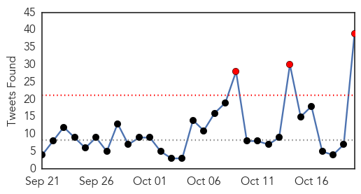
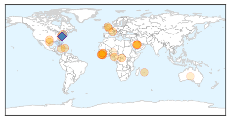
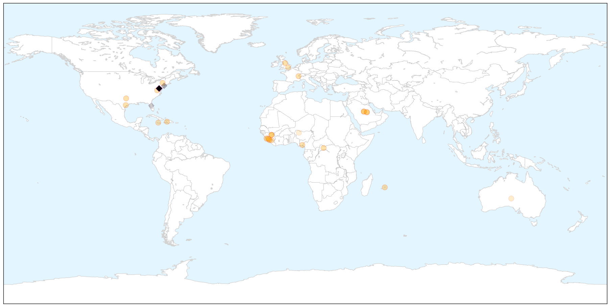
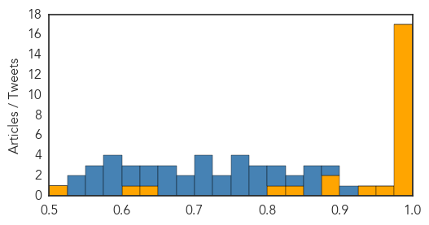
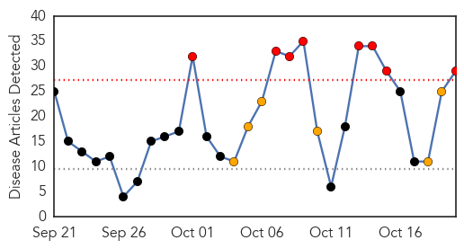
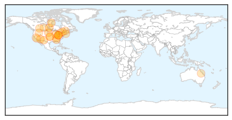
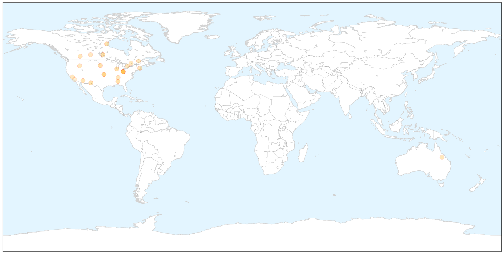

Ebola
30-Day Web Trend
3 alerts, 1 warnings

30-Day Twitter Trend
3 alerts, 0 warnings

Article Locations

X

Article Confidences
Top Articles:
- 1.000
- Ebola One Year Later: Preparedness Is Not Enough
- 0.999
- UN: 2 new Ebola cases found in Guinea this week after 2 weeks of zero cases in West Africa
- 0.999
- World health chief says US, Saudi discussing MERS vaccine
- 0.999
- WHO chief says US, Saudi discussing Mers vaccine, Europe News & Top Stories
- 0.999
- If Nigerians Can So Can Americans Conquer Ebola Hysteria - By Farouk Martins Aresa
- 0.999
- World health chief says US, Saudi discussing MERS vaccine
- 0.999
- World Health Organization chief says US, Saudi Arabia discussing MERS vaccine
- 0.999
- So It Turns Out There’s A Lot We Don’t Know About Ebola : Goats and Soda : NPR
- 0.999
- World health chief says U.S., Saudi discussing MERS vaccine
- 0.998
- UN Envoy calls for a Consolidated support for Liberia’s recovery
- 0.997
- Role of healthcare workers in early epidemic spread of Ebola: policy implications of prophylactic compared to reactive vaccination policy in outbreak prevention and control
- 0.996
- Mauritius Intensifies Screening For Ebola Virus At Port & Airport
- 0.995
- Providing care and protection, in Ebola times and beyond
- 0.994
- Thanks Obama! Ebola down from 100 to 10 new cases a day in Liberia
- 0.992
- When Ebola lingers: A survivor's story
- 0.985
- Ebola: One Year After, FG Insists on Vigilance, Articles
- 0.980
- ARLnow.com
- 0.965
- Hope and change in Canada, mob violence in Israel, and more
- 0.939
- Untouched: How 284 Liberian Communities Remained Ebola-Free - Liberia
- 0.895
- British Ebola nurse's condition improves
- 0.895
- Jamaica battles hospital infections that have killed 18 babies in three months
- 0.844
- BIO KICKS OFF TOUR IN KAMBIA, PORT LOKO, BOMBALI AND KOINADUGU ON EBOLA SOCIAL MOBILISATION
- 0.811
- Bio kicks off social mobilisation tour in Kambia and Port Loko
- 0.649
- I hold Ebola survivors in high esteem – Palo Conteh « Awoko Newspaper
- 0.602
- Esperance nurse recalls Ebola horrors on 60 Minutes
- 0.508
- Why hand washing shouldn’t end with Ebola scare
Top Tweets:
- 0.909
- Ebola now a confirmed STD - https://t.co/bLCn8n6o3C ebola
- 0.879
- RT: I'd completely missed this CID paper reporting Ebola virus in CSF after a lumbar puncture-h/t https://t.c…
- 0.871
- Sierra Leone News: I hold Ebola survivors in high esteem – - https://t.co/9ckCNRU97d ebola
- 0.868
- Ebola dubsmash - https://t.co/o88CCloiyD ebola
- 0.868
- Ebola Relapses - https://t.co/gwni0WpBd2 ebola
- 0.826
- Ebola presentation - https://t.co/SUXkO3MJTi ebola
- 0.824
- Nigeria to set up Ebola survivor clinic - The Nation Newspaper https://t.co/ltW1TELPE5 ebola EVD
- 0.801
- Man Drops Off 'Ebola Cure' Causes Commotion - Hartford Courant https://t.co/dWaj9YOxxq ebola EVD
- 0.797
- Nigeria to set up Ebola survivor clinic - https://t.co/dsTIIEHUm6 ebola
- 0.784
- Nigeria to establish Ebola relapse clinic - https://t.co/i0wzHp1OAB ebola
- 0.778
- Nurse finds ebola absent on return visit - Wanganui Chronicle https://t.co/JLgopsAV08 ebola EVD
- 0.768
- Traditional Healers Key to Stamping Out Ebola in Guinea - Voice of America https://t.co/ZLyXDLVqns ebola EVD
- 0.764
- FG set to establish Ebola survival clinic says NCDC Director - Vanguard https://t.co/5QmkOnPtyt ebola EVD
- 0.761
- Ebola Returns: 2nd Case of Relapse Raises Questions - https://t.co/MEwxah0IJi ebola
- 0.756
- Infographics. What Ebola exposed about health systems in West Africa https://t.co/o1gVL4xxVY
- 0.737
- Ebola Returns: 2nd Case of Relapse Raises Questions - Live Science https://t.co/FQZJDjkdoc ebola EVD
- 0.736
- TIME Magazine's Ebola Doctor in First US Appearance: What's Needed for Next Epidemic - https://t.co/USyydDhOc3 ebola
- 0.716
- Ebola: Trouble not over yet says FG - https://t.co/YoJc2kYizi ebola
- 0.713
- Ebola One Year Later: Preparedness is not enough - U.S. News & World Report https://t.co/N5ko9SVagZ ebola EVD
- 0.706
- Man Drops Off 'Ebola Cure' At Danbury Business Causes Commotion - Hartford Courant https://t.co/4zdTrJlFQY ebola EVD
- 0.700
- Ebola nurse Pauline Cafferkey's condition is "serious but stable" - https://t.co/CeX7XG8kjI ebola
- 0.687
- Ebola Relapse - Could a Liberian Woman Have Survived Ebola Twice? - https://t.co/NaiI6Jl8yj https://t.co/XsxhM6M6QJ ebola EVD
- 0.676
- Vial Marked “Ebola” Dropped Off At Danbury Office - https://t.co/uH6J35hbiL ebola
- 0.673
- How Did Ebola Impact MaternalandChildHealth in Liberia and Sierra Leone? https://t.co/pmUNOlFERY
- 0.667
- Ebola One Year Later: Preparedness is not enough - https://t.co/yzVBxz9CK4 ebola
- 0.656
- Man Leaves Vial Labeled 'Ebola' at Danbury Building - https://t.co/rnvMSL9cSZ ebola
- 0.647
- Man Drops Off 'Ebola Cure' At Danbury Business Causes Commotion - https://t.co/6gE7rRS7me ebola
- 0.639
- Ebola Crisis Spurs New WHO Reform Program - Voice of America https://t.co/lm1WFpbILR ebola EVD
- 0.609
- RT: NEWS SCAN: UK Ebola nurse improves; CDC food outbreak tool https://t.co/w846YUmRQT
- 0.600
- Man Drops Off Fake Ebola Cure at Connecticut Office - TIME https://t.co/g3J1wCTjOR ebola EVD
- 0.600
- DEEP: Vial labeled “Ebola” found at Danbury building - https://t.co/TtpQPkLltN ebola
- 0.591
- Contextualising Ebola rumours to understand people’s perceptions of Ebola and the responses to it https://t.co/gqVLF4JW62
- 0.591
- BIO KICKS OFF TOUR IN KAMBIA PORT LOKO BOMBALI AND KOINADUGU ON EBOLA SOCIAL ... - https://t.co/pPl6WGbTrB ebola
- 0.582
- What first case of sexuallytransmitted Ebola means for public health @naturenews https://t.co/XzILyv73kC
- 0.574
- Ebola: One Year After FG Insists on Vigilance - https://t.co/7Gle8y2AoO ebola
- 0.566
- At a glance: Sierra Leone - UNICEF (press release) https://t.co/1ikNp4M9FE ebola EVD
- 0.556
- Man Drops Off Fake Ebola Cure at Connecticut Office - https://t.co/5iHndduzgU ebola
- 0.548
- Mystery substance in “Ebola” vial forces evacuation of - https://t.co/yMDqlw4ouF ebola
- 0.530
- “Ebola” written on vial leads to evacuation of Danbury business - https://t.co/jxjqFfcWiD ebola
Influenza
30-Day Web Trend
8 alerts, 6 warnings

30-Day Twitter Trend
0 alerts, 0 warnings

Article Locations

X

Article Confidences

Top Articles:
- 0.999
- Protect yourself and your family from the flu
- 0.995
- Health, Wellness, and Fitness: 10/20
- 0.992
- Flu vaccines available in two provinces
- 0.991
- Get your flu shots as early as possible, despite some shipping delays
- 0.991
- Immunize El Paso to give flu shots countywide through November
- 0.990
- Fighting against the flu bug
- 0.984
- Flu shot still best weapon at hand
- 0.982
- Fewer than fifty percent in U.S. get flu shots, CDC says -
- 0.980
- Shortage of vaccination mist greets flu season
- 0.974
- Five and six-year-olds included in the NHS seasonal flu vaccination campaign for the first time
- 0.915
- Free flu shots for uninsured adults starts this week
- 0.863
- Future flu: ASU experts weigh in on where the annual shot is heading
- 0.839
- Flu shots won't be mandatory for health-care workers in Alberta
- 0.811
- Rota supporters gathering at North Bay's Davedi Club
- 0.806
- Today's stories from newspapers in Caledon
- 0.806
- Today's stories from newspapers in Caledon
- 0.806
- Today's stories from newspapers in Caledon
- 0.785
- Today's stories from newspapers in Ottawa Valley
- 0.785
- Today's stories from newspapers in Ottawa Valley
- 0.785
- Today's stories from newspapers in Ottawa Valley
- 0.779
- Health officials urge getting flu vaccine despite FluMist shortage
- 0.751
- October 20, 2015 Archives
- 0.751
- October 19, 2015 Archives
- 0.750
- Gov. Haslam gets flu shot, urges others to follow suit
- 0.723
- Saskatchewan flu vaccine clinics open, FluMist in limited supply
- 0.663
- Flu shot clinics open
- 0.554
- News in Brief 20 October 2015 (PM)
- 0.536
- Sask. 'immunize or mask' policy takes pause, but still encouraged
- 0.520
- Free flu vaccines available at Malibu Library on Oct. 24
Top Tweets:
- 0.921
- Health Care Professionals: This season’s Flu vaccine includes updated H3N2 & influenza B virus components. More: https://t.co/PoO4nhnzCr